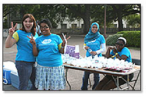

Get Involved
VAV on Social Media
Follow and like VAV on Facebook, Twitter and/or Instagram to get the latest on our events, opportunities and related news in the media. Sharing a post or tweet is a great way to show your support for VAV. |
 |
Stay in Touch
If you would like to be informed about VAV events and volunteer opportunities please sign up for our listserv. We send out about one e-mail per week.VAV listserv
If you are having issues finding or subscribing directly - please e-mail us at voicesagainstviolence@austin.utexas.edu

VAV's sponsored student organization is open to any enrolled student at UT Austin. The VAV Student Org plans events during Relationship Violence Prevention Month (October) and Sexual Violence Prevention Month (April), including our annual survivor speak-outs: Breaking the Silence and Take Back the Night. Students organize volunteers during events and promote events and campaigns on campus via class announcements, social media and tabling on campus. We host conversations about current examples of interpersonal violence cases and prevention during our meetings.
We meet every Tuesday 6pm - 7pm in the POWER House, Student Services Building (SSB), Ground floor, G 1.400.
Learn more and join via the Facebook group: www.tinyurl.com/vavstudentorg
Find out more here.
MasculinUT: Healthy Masculinities Project is a project by Voices Against Violence in the Counseling and Mental Health Center that aims to promote healthy masculinities on the UT Austin campus. Through public events, educational workshops, and other forms of student involvement, our goal is to impact campus culture to increase acceptance of gender diversity, promote healthy relationships with an emphasis on consent, and prevent interpersonal violence.
To join the MasculinUT Steering Committee please email voicesagainstviolence@austin.utexas.edu
Read More:
Faculty may also be interested in joining Faculty Against Rape, founded in August, 2014: http://facultyagainstrape.net/
Five Ways Faculty and Staff Can Fight Sexual Violence on Campus: http://www.aauw.org/2014/04/14/fight-campus-sexual-violence/
For more information about Theatre for Dialogue, click here.
To find out more about how to get academic credit with Theatre for Dialogue, click here.
Available materials:
VAV Prevention and Outreach staff offices are located in the POWER House (Prevention, Outreach, Wellness, Education and Response), Ground floor of the SSB, G 1.400.
For more information about other ways to get involved with CMHC, please check out this page: http://www.cmhc.utexas.edu/preventionoutreach.html
Together we can build a safer campus
VAV Student Organization
Become a Theatre for Dialogue Peer Educator
The VAV Theatre for Dialogue performances are presented by undergraduate and graduate UT Austin students who are trained through a year-long academic course sequence. Previous performance experience is NOT required to be in the class. Students learn about issues of interpersonal violence, rape culture, bystander intervention, and methods of applied and interactive theatre. Credit is available through the School of Social Work, Theatre and Dance, or Women's and Gender Studies.
MasculinUT Initiative
Faculty and Staff
Faculty and Staff can support the work of preventing and responding to interpersonal violence by announcing resources and events, linking to VAV and requesting performances or workshops for groups you work with. Be familiar with services for survivors, including reporting options for on campus and to law enforcement.
Attend and Support our Annual Events
See the video below for a snapshot of our annual speak-out for survivors of sexual assault, Take Back the Night:
Theatre for Dialogue Performance Requests
If you are interested bringing Theatre for Dialogue or Get Sexy. Get Consent. to your classroom, organization or event, call (512) 475-6957
Workshop and Training Requests
VAV offers flexible workshops on the topics of sexual violence, relationship violence, stalking, consent and supportive response. VAV tailors our trainings to meet the needs of different campus groups. We require a minimum of one hour and suggest a minimum attendance of 15 people. If you would like to bring a VAV workshop or training to your classroom or organization, please contact Lauren White at lwhite@austin.utexas.edu or call (512) 475-6957 to discuss program options.
VAV Printed Materials Request
Voices Against Violence produces pocket resource guides and prevention-education materials. If you would like to request VAV printed materials for your students, residents, office or organization, please contact Lauren White at lwhite@austin.utexas.edu or (512) 475-6957 with which materials you are interested in and the quantity.
Have questions or want more information?
If you have questions about VAV activities and resources please email: voicesagainstviolence@austin.utexas.edu or call Lauren White, (512) 475-6957